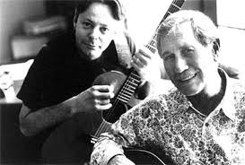

Карьера
Начало карьерного пути

После смерти отца, австралийская звезда кантри Бадди Уильямс (Buddy Williams) решает помочь семье Эммануэлей и берет молодых дарований
в тур, но вскоре департамент защиты детей запрещает гастролировать юным музыкантам и отправляет
их в обычную общеобразовательную школу.
В течении школьных лет Томми продолжает играть в The Trailblazers по выходным.
Желая помочь семье с деньгами в возрасте 12-и лет он начинает преподавать гитару и благодаря потрясающим способностям его воспринимают
наравне с взрослыми преподавателями.
Позже Томми выигрывает телевизионный конкурс молодых талантов и записывает свою первую пластинку.
Томми перебирается в Сидней, чтобы начать свою карьеру профессионального гитариста. В начале 70-х годов он играет в клубах по всему городу и вскоре становится востребован как сессионый гитарист, прославившись как универсальный гитарист со спокойным характером. В середине 70-х и начале 80-х он принимал участие в записях таких австралийских групп как Air Supply, Men at Work и других исполнителей, а также в сотнях коммерческих «джинглов».
В 1980 году, Томми совершает поездку в США где и происходит долгожданная встреча с Эткинсом. Чет берет его под свое крыло и знакомит с другими легендарными гитаристами. С тех пор Томми всегда отзывается о Чете с любовью и благодарностью — он оказал огромное влияние на его музыку и жизненную философию. Техничность, виртуозные импровизации и широчайший репертуар, который охватывает кантри, блюграсс, поп, джас, блюз, госпел, классику, фломенко — все это наследие Чета Эткинса.
В 1985 году, Эммануэль присоединяется к одной из крупнейших австралийских рок-групп десятилетия Dragon и записывает альбом «Dreams of Ordinary Men», который становится платиновым. В 1987 году Dragon участвует в туре «Break Every Rule» Тины Тёрнер (Tina Turner), на котором Томми знакомится со своей будущей женой Джейн, их брак продлится 15 лет и подарит им двух дочерей — Аманду и Анджелину. В качестве композитора Томми принимает участие в записях Стива Кипнера (Steve Kipner), Оливии Ньютон-Джон (Olivia Newton-John), Эл Джарро (Al Jarreau) и Шины Истон (Sheena Easton).
Сольная деятельность
В 1988 году, Томми Эммануэль начинает свою сольную инструментальную карьеру выпуская альбом «Up From Down Under»,
который ставит рекорды продаж и к нему приходит общественное признание от австралийской музыкальной индустрии.
Несмотря на то, что Томми уже был известен в Австралии, Азии и Европе, успех в США пришел не сразу,
однако все изменилось в 1997 году, когда его альбом «Midnight Drive» продержался 16 недель в пятерке лучших альбомов
американской радиостанции NAC.
 А в 1997 году совместный с Четом Эткинсом альбом «The Day The Finger Pickers Took Over The World» приносит Томми
первую номинацию на Грэмми.
А в 1997 году совместный с Четом Эткинсом альбом «The Day The Finger Pickers Took Over The World» приносит Томми
первую номинацию на Грэмми.
В 1999 году, одну из самых главных наград в своей жизни Томми получает из рук своего учителя, Чета Эткинса.
В Нашвилле он награждает его титулом Certified Guitar Player с ироничной формулировкой
«скромный, необразованный, кантри-ребенок», за вклад в развитие пальцевого стиля игры на гитаре (fingerstyle).
Этим званием обладают лишь несколько гитаристов в мире:
- Джерри Рид (Jerry Reed),
- Стив Уорнер (Steve Wariner)
- Джон Ноуэлс (John Knowles)
- Пол Яндел (Paul Yandell)
1 октября 2000 года, Томми, вместе с братом Филом, выступает на закрытие Олимпийских игр в Сиднее перед 2,5 миллиардной аудиторией. В конце 2000 года участвует в знаменитом американском фестивале Walnut Valley Festival, а в 2001 году, Эммануэль записывает свой первый акустический альбом «Only» и в 2002 году дебютирует с ним в США.
Во второй половине 2000-х, популярность Томми Эммануэля в США стремительно растет, во многом благодаря активной концертной деятельности и поддержки СМИ. 2005-й год был богат на премии и номинации. Томми вводят в зал славы National Thumbpickers, несмотря на то, что этим званием награждают только американских музыкантов — для Томми сделали исключение. В том же году он принимает участие в концерте по случаю 90-летия легендарного Лес Пола (Les Paul), а в 2006-м получает уже вторую в своей биографии номинацию на Грэмми за композицию «Gameshow Rag/Cannonball Rag» с альбома «The Mystery«. В 2008 году он был назван «Лучшим акустическим гитаристом» журналами Guitar Player и Acoustic Guitar, а позже дважды получал звание Thumbpicker of the Year. И это далеко не все награды.
14 июня 2010 года стал незабываемым днем в карьере Эммануэля. Томми был удостоен звания члена Королевского Ордена Австралии за «служение музыке как гитарист и обществу, поддерживая Kids Under Cover». Австралийская благотворительная организация Kids Under Cover, которой Томми помогает, занимается строительством домов и выделением стипендий. В декабре 2010 года Томми получает приглашение поработать над незавершенными посмертными записями Майкла Джексона. Эммануэль сыграл соло на композиции «Much Too Soon», который Джексон первоначально написал в 1981 году, но так и не выпустил.
15 февраля 2011 года, Томми выпустил сольный двух дисковый альбом «Little By Little», который получил отличные отзывы:

«Игра Эммануэля, композиции, обложка, все великолепно. Для тех, кто не знаком с Эммануэлем: он является одним из самых поразительных гитаристов в мире, который когда-либо выступал на сцене. В живом исполнении это чудо скорости, изобретательности и таланта»
Уэйн Бледсо (Wayne Bledsoe), журналист
Есть пословица на языке Суахили, которая звучит примерно так «Все возможно, если вы делаете это шаг за шагом». Это вдохновило Томми, чтобы дать такое название альбому, Little By Little (дословно — по чуть-чуть).
«Эта пословица имеет особое значение для меня, шаг за шагом — это важный урок, который я усвоил в жизни» — говорит он,
«Этот проект делался дольше других, потому что в процессе добавлялись новые композиции.
Я очень рад, что в этом альбоме собрались все эти вещи.
Я смог отправить послание людям через свою музыку и получить позитивный ответ».
«Своей игрой я стараюсь сделать людей счастливее»
На данный момент творчество Томми Эммануэля насчитывает более 20 студийных альбомов, среди них сольные акустические и электрические, дуэты, трио и квартеты. А также 4 концертных DVD, 3 обучающих DVD и множество мастер-классов. Томми как никто другой ценит и любит концертную деятельность, за последние 5 лет он играл более 300 концертов в год и продолжает активно выступать. На его концертах можно встретить и молодых слушателей, и взрослых, и известных музыкантов, которые пришли посмотреть как играет «волшебный гитарист из страны ОЗ», но его общение с публикой выходит за рамки музыки.
Его выступления знамениты юмором и энергетикой, а невероятная харизматичность сразу же располагает к себе абсолютно любого.
«Если где-то рядом с вами выступает Томми Эммануэль — не идите, а бегите на него! Миру сейчас очень не хватает настоящего счастья, но на концертах Томми вы обязательно его найдете»